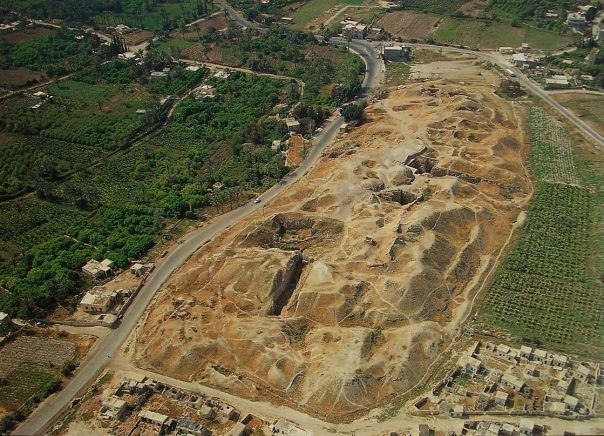
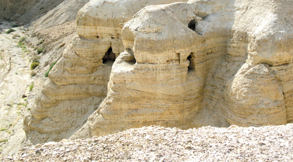
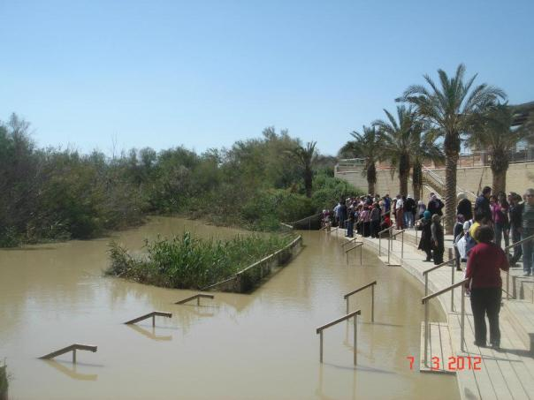

Jericho is on the road to Amman and at the junction of the highway to the Galilee. In Jericho is Tel as-Sultan, the ancient city of Jericho, which is the lowest (258 meters below sea level) and the oldest town on earth, dating back more than 10,000 years. It grew up around a perennial spring, Ain as-Sultan, in an area of fertile alluvial soil that attracted hunter-gatherer groups to settle and start the process of plant and animal domestication. Ain as-Sultan is known as Elisha’s spring, where the prophet Elisha cleansed the water of Jericho. Jericho’s moderate climate makes it a favorite winter resort, as it is always a number of degrees warmer than other parts of Palestine owing to its low elevation and the height of the surrounding mountains. It is an important agricultural area, producing fresh fruits and vegetables year round. Jericho dates, bananas and citrus fruits are especially famous.
is a city in the Palestinian Territories and is located near the Jordan River in the West Bank. It is the administrative seat of the Jericho Governorate, and is governed by the Fatah faction of the Palestinian National Authority.[2] In 2007, it had a population of 18,346.[3] The city was occupied by Jordan from 1949 to 1967, and has been held under Israeli occupation since 1967; administrative control was handed over to the Palestinian Authority in 1994.[4][5] It is believed to be one of the oldest inhabited cities in the world[6][7][8] and the city with the oldest known protective wall in the world.[9] It was thought to have the oldest stone tower in the world as well, but excavations at Tell Qaramel in Syria have discovered stone towers that are even older.
Located 15 kilometers south of Jericho on the western shore of the Dead Sea, this is the site where the famous Dead Sea Scrolls were found. A Palestinian shepherd who was looking for a stray goat made the discovery of the scrolls in 1947. The scrolls consist of copies of biblical and apocryphal literature, the writings of the sect, including the Commentaries, the Rule of the Community, the Scroll of the War of the Sons of Light against the Sons of Darkness, and the Damascus Document. The dates of these scrolls range from the second century BC to 68 AD, but they date mainly from the first century BC. The study of the scrolls developed into an academic discipline known as Qumranic studies. It provides us with valuable information about the history of Judaism and the early phase of Christianity. Following the find, several excavations were carried out on the site and in the surrounding caves. The excavated site revealed a large complex of buildings, including communal facilities, a sophisticated water system, a library, and a large cemetery.
TELL AS-SULTAN (ANCIENT JERICHO), THE OLDEST CITY IN THE WORLD
The site of Tell as-Sultan is located in the lower plain of the Jordan Valley, approximately ten kilometers north of the Dead Sea. At a depth of 250 meters below sea level, and with a history that dates back to the Neolithic period, it is the lowest and the oldest town on the earth. The mound where the ruins of the town were found covers an area of about one acre. Successive excavations at the site uncovered its cultural history that stretches over 10,000 years. The earliest remains belong to the Natufian culture (10th–8th millennia BC), and consist of flint tools, which attests to the presence of a hunting Natufian camp near the spring. The remains of the early Neolithic settlement are represented by a small settlement, with round houses built of mud brick and surrounded by a wall and a round tower, representing the earliest preserved piece of a fortification system.
THE JORDAN RIVER
Al-Haram al-Ibrahimi is located at the southeast corner of modern Hebron and in the heart of its old town. It is considered the fourth holiest site in Islam and the second holiest site in Palestine. Historical evidence suggests that the Prophet Ibrahim/Abraham resided in Hebron approximately four thousand years ago. He chose Hebron as a burial place for his wife Sarah, and later for himself, his son Isaac, his grandson Jacob and their wives. According to some sources, it also houses the tomb of Joseph. The Jordan River flows from Mount Hermon in Syria, about 914 meters above sea level, to the Dead Sea, which is 396 meters below sea level. The winding Jordan River, with an average width of 30 meters, covers a distance of only 105 kilometers as the crow flies. However, if it were stretched out, the riverbed would cover 257 kilometers end-to-end. Jesus was baptized by John in the Jordan River, and ever since, the river has been a holy site for Christians, with many pilgrims visiting the river every year to be baptized.